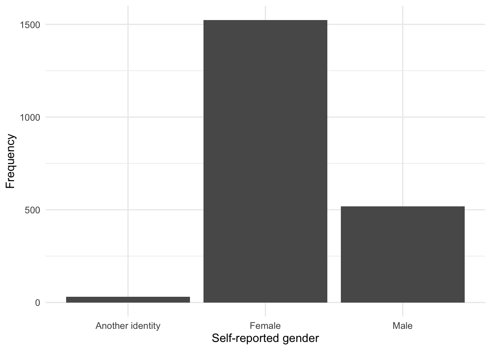
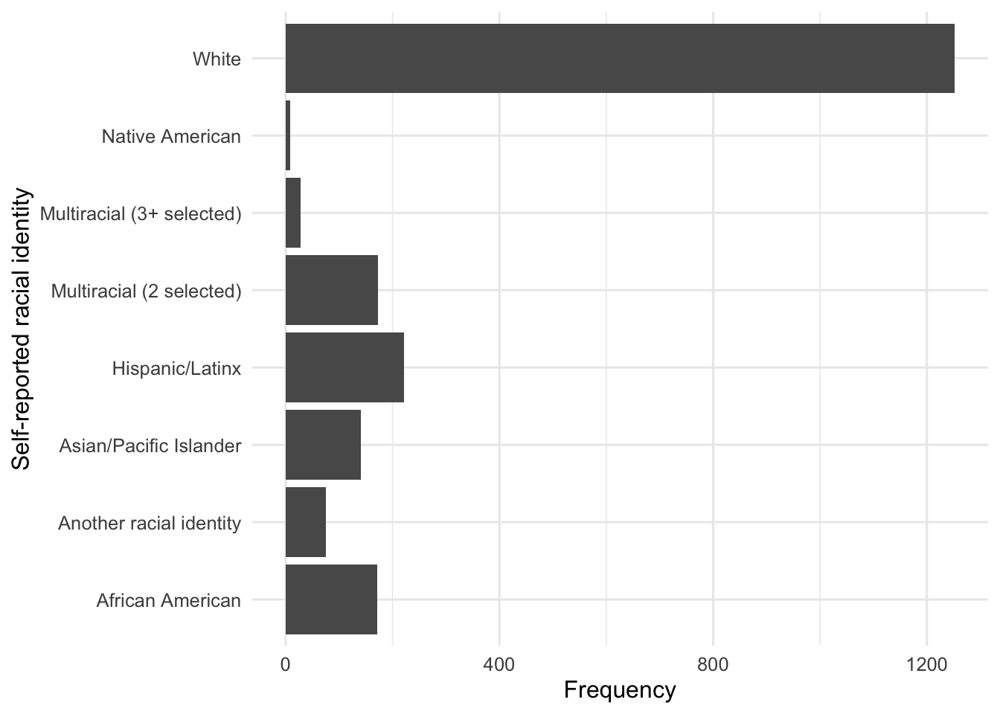
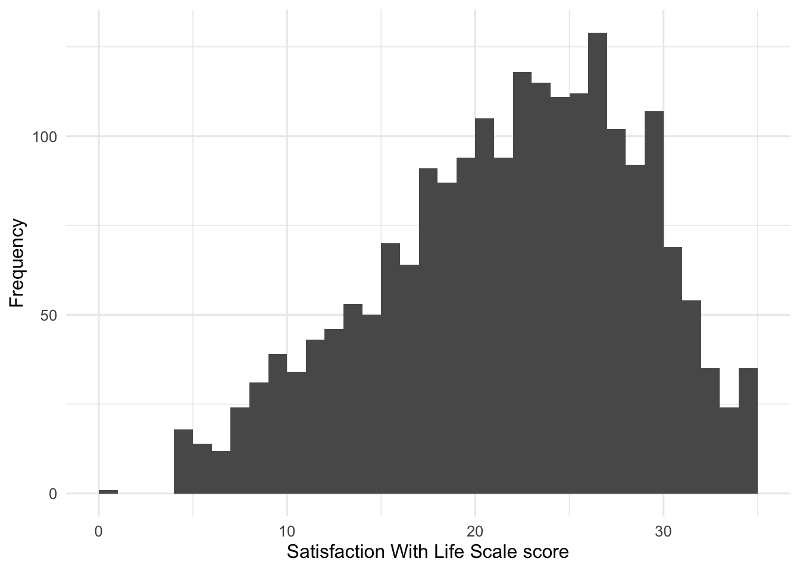
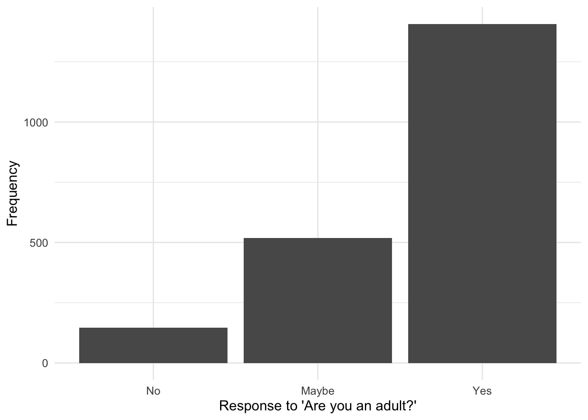
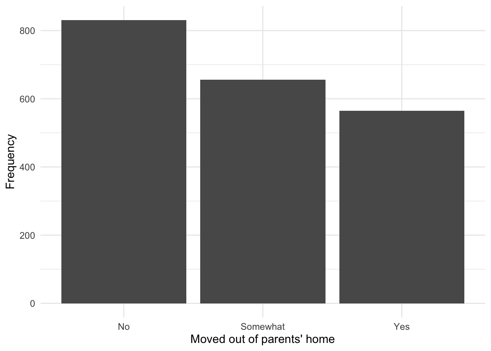

source("scripts/_setup.R")Chapter 2: Exploring Data
Frequency distributions and graphs
Create frequency distributions, bar charts, and histograms to describe the EAMMi2 sample.
Chapter 2 of Exploring Statistics introduces frequency distributions and graphs as tools for organizing data. For starters, we will use R to learn who participated in EAMMi2 and what their scores look like. Tables give us the exact values; graphs help us see the larger pattern.
Learning Goals
By the end of this chapter, you should be able to:
- create frequency tables for categorical and quantitative variables;
- calculate and interpret percentages and cumulative percentages;
- produce bar charts for categorical variables;
- produce a histogram for a quantitative variable;
- describe the shape of a quantitative distribution; and
- adapt a demonstrated analysis for new variables.
Research Questions
This chapter is organized around two research questions:
- Who are our EAMMi2 participants?
- Where do our participants stand on adulthood status?
Research Question 1 provides a worked analysis. Research Question 2 asks you to modify the same code patterns for two new variables.
Research Question 1: Who Are Our EAMMi2 Participants?
For starters, let’s examine two variables: gender identity and racial identity. Then we will create a frequency table and graph for a quantitative variable: Satisfaction With Life.
Get Ready
This chapter uses scripts/02-frequency-distributions.R in the starter files.
Open the Chapter 2 script
- Open
exploring-statistics-r.Rproj. - In the Output pane, select the Files tab.
- Open the
scriptsfolder. - Open
02-frequency-distributions.R. - Run one complete expression at a time as you work through this chapter.
Begin by running the shared setup file.
The first research question uses three variables:
| Variable | What it measures | Statistical variable type |
|---|---|---|
Gender |
Self-reported gender identity | categorical |
Race |
Self-reported racial identity | categorical |
SWLS |
Satisfaction With Life Scale score | quantitative |
Use Understanding EAMMi2 when you need to check a variable’s category codes or possible score range.
Predict
Before preparing the variables, record your predictions:
- Which gender category and racial identity category do you expect to appear most often?
- Will a bar chart or histogram be appropriate for
GenderandRace? - Will a bar chart or histogram be appropriate for
SWLS?
Run The Analysis
Prepare Gender
Gender is stored as the numeric codes 1, 2, and 3. The next code gives those codes readable labels.
eammi <- eammi |>
mutate(
Gender = factor(
Gender,
levels = c(3, 2, 1),
labels = c("Another identity", "Female", "Male")
)
)This is the mutate() and factor() pattern introduced in Chapter 1. The categories are displayed alphabetically because Gender is nominal and does not have a meaningful low-to-high order.
Prepare Race
The next block uses the same pattern for Race. Before running it, identify the three parts that changed from the Gender code: the variable name, the original codes, and the displayed labels.
eammi <- eammi |>
mutate(
Race = factor(
Race,
levels = c(2, 6, 4, 3, 7, 8, 5, 1),
labels = c(
"African American",
"Another racial identity",
"Asian/Pacific Islander",
"Hispanic/Latinx",
"Multiracial (2 selected)",
"Multiracial (3+ selected)",
"Native American",
"White"
)
)
)Create Frequency Tables
This is the frequency-table code introduced in Chapter 1, with one addition: CumulativePercent adds percentages as you move down the table.
gender_table <- eammi |>
count(Gender, name = "Frequency") |>
mutate(
Percent = round(100 * Frequency / sum(Frequency), 1),
CumulativePercent = round(100 * cumsum(Frequency) / sum(Frequency), 1)
)
gender_table# A tibble: 3 × 4
Gender Frequency Percent CumulativePercent
<fct> <int> <dbl> <dbl>
1 Another identity 30 1.4 1.4
2 Female 1524 73.5 75
3 Male 519 25 100 Investigate The Code
Frequencygives the number of participants in each category.Percentgives each category’s share of the responses.cumsum(Frequency)creates a running total.CumulativePercentgives a running total through the displayed rows. For an ordered variable, it can answer questions about the percentage at or below a value. For nominal variables such asGenderandRace, it is only a display total because the categories do not have a low-to-high order.
Now modify the same pattern for Race.
race_table <- eammi |>
drop_na(Race) |>
count(Race, name = "Frequency") |>
mutate(
Percent = round(100 * Frequency / sum(Frequency), 1),
CumulativePercent = round(100 * cumsum(Frequency) / sum(Frequency), 1)
)
race_table# A tibble: 8 × 4
Race Frequency Percent CumulativePercent
<fct> <int> <dbl> <dbl>
1 African American 172 8.3 8.3
2 Another racial identity 76 3.7 12
3 Asian/Pacific Islander 141 6.8 18.8
4 Hispanic/Latinx 222 10.7 29.5
5 Multiracial (2 selected) 173 8.3 37.8
6 Multiracial (3+ selected) 28 1.4 39.2
7 Native American 8 0.4 39.6
8 White 1252 60.4 100 Race has one missing response. drop_na(Race) leaves out that response so the percentages describe participants who provided a racial identity response.
Create Bar Charts
Both Gender and Race are categorical, so each bar represents a category.
ggplot(gender_table, aes(x = Gender, y = Frequency)) +
geom_col() +
labs(
x = "Self-reported gender",
y = "Frequency"
)
This repeats the Chapter 1 pattern: name the table in ggplot(), map the category and frequency to the axes in aes(), request bars with geom_col(), and add readable labels with labs().
Now apply the same pattern to Race. coord_flip() turns the graph sideways so the longer labels are easier to read.
ggplot(race_table, aes(x = Race, y = Frequency)) +
geom_col() +
coord_flip() +
labs(
x = "Self-reported racial identity",
y = "Frequency"
)
Examine Satisfaction With Life
SWLS contains scores on the Satisfaction With Life Scale. The scale contains five questions, each answered from 1 to 7, so possible total scores range from 5 to 35.
You might remember from Chapter 2 of your textbook that this is the variable used to introduce frequency distributions and frequency polygons or histograms. If not, now is a good time to reread that section.
Use class() to check how R currently represents the variable.
class(eammi$SWLS)[1] "numeric"R represents SWLS as numeric. The code below creates a frequency table with the score, frequency, percent, and cumulative percent.
swls_table <- eammi |>
count(SWLS, name = "Frequency") |>
mutate(
Percent = round(100 * Frequency / sum(Frequency), 1),
CumulativePercent = round(100 * cumsum(Frequency) / sum(Frequency), 1)
)
print(swls_table, n = 32)# A tibble: 32 × 4
SWLS Frequency Percent CumulativePercent
<dbl> <int> <dbl> <dbl>
1 0 1 0 0
2 5 18 0.9 0.9
3 6 14 0.7 1.6
4 7 12 0.6 2.2
5 8 24 1.2 3.3
6 9 31 1.5 4.8
7 10 39 1.9 6.7
8 11 34 1.6 8.3
9 12 43 2.1 10.4
10 13 46 2.2 12.6
11 14 53 2.6 15.2
12 15 50 2.4 17.6
13 16 70 3.4 21
14 17 64 3.1 24.1
15 18 91 4.4 28.5
16 19 87 4.2 32.7
17 20 94 4.5 37.2
18 21 105 5.1 42.3
19 22 94 4.5 46.8
20 23 118 5.7 52.5
21 24 115 5.5 58
22 25 111 5.4 63.4
23 26 112 5.4 68.8
24 27 129 6.2 75
25 28 102 4.9 79.9
26 29 92 4.4 84.4
27 30 107 5.2 89.5
28 31 69 3.3 92.9
29 32 54 2.6 95.5
30 33 35 1.7 97.2
31 34 24 1.2 98.3
32 35 35 1.7 100 Pause And Inspect
Before reading further, scan the first and last rows of the table. Do all observed scores fall between 5 and 35?
One response has an observed SWLS value of 0, outside the possible range. This is not an error in R. Real datasets sometimes contain coding errors, impossible values, or unfinished responses. Examining variables before interpreting them helps us identify these issues.
The cumulative percent column answers questions such as, “What percent of the sample scored below 20?” The row for SWLS = 19 gives the cumulative percentage for scores below 20.
A frequency table gives exact counts. A histogram makes the shape of a quantitative distribution easier to see.
ggplot(eammi, aes(x = SWLS)) +
geom_histogram(binwidth = 1, boundary = 0) +
labs(
x = "Satisfaction With Life Scale score",
y = "Frequency"
)
Investigate The Graph
This graph starts with the original eammi data frame rather than a frequency table. Because SWLS is quantitative, it uses geom_histogram() instead of geom_col().
geom_col()draws bars from values already calculated in a table.geom_histogram()groups quantitative scores into intervals and counts the observations in each interval.
Read The Output
The reduced EAMMi2 sample was comprised of 2,073 respondents between the ages of 18 and 29 years. Of these respondents, a majority identified as female (73.5%, or n = 1,524), with 519 who identified as male (25.0%) and 30 participants who identified as another gender (1.4%). Furthermore, a majority of respondents identified as White (60.4%, or n = 1,252), followed by Hispanic/Latinx (10.7%, or n = 222) and Multiracial (2 selected) (8.3%, or n = 173). Frequencies for all other racial identities are presented in the table.
Neither the SWLS frequency table nor the histogram gives us all of the information we need by itself. Together, they provide a richer understanding: the table gives exact counts and percentages, while the histogram makes the overall shape easier to see.
Produce Your Interpretation
Write a paragraph summarizing SWLS. State the shape of the distribution, the percent of participants who scored below 20, and the most common score. Then compare the distribution with the one presented in Chapter 2 of your textbook.
NoteReporting sample sizes
In APA style, use capital N for the entire sample and lower-case n for a subgroup.
Research Question 2: Where Do Our Participants Stand On Adulthood Status?
As a reminder, EAMMi2 stands for the Emerging Adulthood Measured at Multiple Institutions study, second wave. Where do our participants stand on adulthood status?
Get Ready
| Variable | What it measures | Statistical variable type |
|---|---|---|
Adult |
Whether the participant identifies as an adult | ordinal categorical |
NoLongerHome |
Whether the participant has moved out of their parents’ home | ordinal categorical |
These variables are ordinal, so place their levels in a meaningful order.
eammi <- eammi |>
mutate(
Adult = factor(
Adult,
levels = c(3, 2, 1),
labels = c("No", "Maybe", "Yes"),
ordered = TRUE
),
NoLongerHome = factor(
NoLongerHome,
levels = c(1, 2, 3),
labels = c("No", "Somewhat", "Yes"),
ordered = TRUE
)
)Predict
For each variable, predict the most common response. Then decide which graph is appropriate.
Complete The Analysis
Create a frequency table and graph for each variable. Use Research Question 1 as your model.
- Copy the frequency-table code.
- Create new object names rather than overwriting
gender_tableorrace_table. - Replace the variable name everywhere it appears.
- Decide whether missing responses should be omitted from the table.
- Copy and modify the bar-chart code.
- Write a short interpretation naming the most common response and reporting counts and percentages.
Attempt the analysis before using the completed code in Check Your Work.
Check Your Work
Research Question 1
In the reduced EAMMi2 sample, there was a slight negative skew to Satisfaction With Life Scale scores, with 32.7% of the sample scoring below the midpoint of the scale, or below 20. Furthermore, the most common score was 27 out of a possible 35. This mirrors the distribution presented in Chapter 2 of Exploring Statistics, where 18% of the sample scored below the midpoint and 27 was again the most common score. In short, satisfaction with life appears to be relatively high in both samples.
Research Question 2 Code
adult_table <- eammi |>
drop_na(Adult) |>
count(Adult, name = "Frequency") |>
mutate(
Percent = round(100 * Frequency / sum(Frequency), 1),
CumulativePercent = round(100 * cumsum(Frequency) / sum(Frequency), 1)
)
adult_table# A tibble: 3 × 4
Adult Frequency Percent CumulativePercent
<ord> <int> <dbl> <dbl>
1 No 147 7.1 7.1
2 Maybe 518 25 32.1
3 Yes 1407 67.9 100 home_table <- eammi |>
drop_na(NoLongerHome) |>
count(NoLongerHome, name = "Frequency") |>
mutate(
Percent = round(100 * Frequency / sum(Frequency), 1),
CumulativePercent = round(100 * cumsum(Frequency) / sum(Frequency), 1)
)
home_table# A tibble: 3 × 4
NoLongerHome Frequency Percent CumulativePercent
<ord> <int> <dbl> <dbl>
1 No 831 40.5 40.5
2 Somewhat 656 32 72.5
3 Yes 565 27.5 100 Adult has one missing response, and NoLongerHome has 21 missing responses. drop_na() leaves those responses out of the tables.
ggplot(adult_table, aes(x = Adult, y = Frequency)) +
geom_col() +
labs(
x = "Response to 'Are you an adult?'",
y = "Frequency"
)
ggplot(home_table, aes(x = NoLongerHome, y = Frequency)) +
geom_col() +
labs(
x = "Moved out of parents' home",
y = "Frequency"
)
Research Question 2 Interpretation
The reduced EAMMi2 sample was comprised of 2,073 respondents between the ages of 18 and 29 years. Of these respondents, a majority identified as an adult (67.9%, or n = 1,407), with 518 who said they were “maybe” an adult (25.0%) and 147 who said they were not an adult (7.1%). Respondents were more evenly distributed in their responses about moving out of their parents’ home: 831 had not moved out (40.5%), 656 had “somewhat” moved out (32.0%), and 565 had moved out (27.5%).
Chapter Takeaway
Frequency tables and graphs help us organize a distribution before interpreting it. For categorical variables, frequency tables and bar charts show how many people fall into each category. For quantitative variables, a frequency table provides exact counts while a histogram shows the distribution’s shape.
In this chapter, we focused on these new R commands:
cumsum()creates cumulative totals used for cumulative percentages.drop_na()omits missing responses from a specific analysis.class()shows how R represents a variable.geom_histogram()creates a histogram for a quantitative variable.coord_flip()turns a graph sideways when category labels are long.